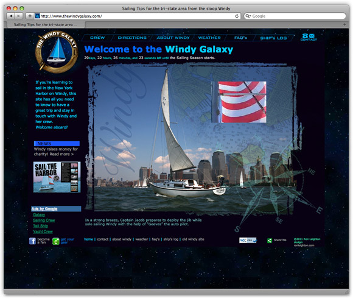
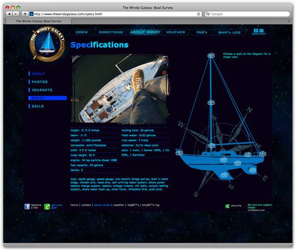
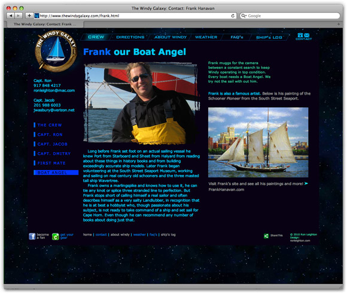

In 2007 I hosted my first ever site designed and coded by me. It was created with Dreamweaver using basic html /CSS code, video, flash, and a few javascript interactives as needed. It featured over 20 pages with a menu ranging from how to visit the boat to where it had traveled to. Used as a sailing club, the website also reached out to the community selling sunset cruises in the New York Harbor to help raise funds for local charities.
This site also had a robust blog “digital ships log” featuring my first introduction to CMS using WordPress. A social facebook page featuring contests to drive site traffic and an online swag shop rounded out the user experience. The ship now has a new owner and the site is closed down.
Client: Web Experiment
Services: Branding, Web Design
Year: 2007-2019
Site Logo Gif


